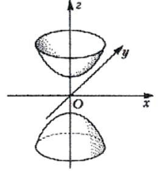

7.5.2.2. Двуполостный гиперболоид

Двуполостным гиперболоидом называется поверхность
второго порядка с каноническим уравнением
 Каноническое
уравнение двуполостного гиперболоида
.
Каноническое
уравнение двуполостного гиперболоида
.Линия пересечения гиперболоида и плоскости  задается системой уравнений:
задается системой уравнений:
задается системой уравнений:которой соответствует пустое множество.
В сечении плоскостью  имеем
кривую
имеем
кривую
имеем
кривуюили
где
и
Очевидно, что решения есть при .
Если , сечение – точка . При сечение
– эллипс с полуосями
Сечение поверхности  плоскостью
плоскостью
 является
гиперболой с действительной осью
является
гиперболой с действительной осью  и мнимой осью
и мнимой осью  . Сечение плоскостью
. Сечение плоскостью
 - гипербола с действительной осью и мнимой осью
- гипербола с действительной осью и мнимой осью  .
.
плоскостью
является
гиперболой с действительной осью и мнимой осью . Сечение плоскостью
- гипербола с действительной осью и мнимой осью .